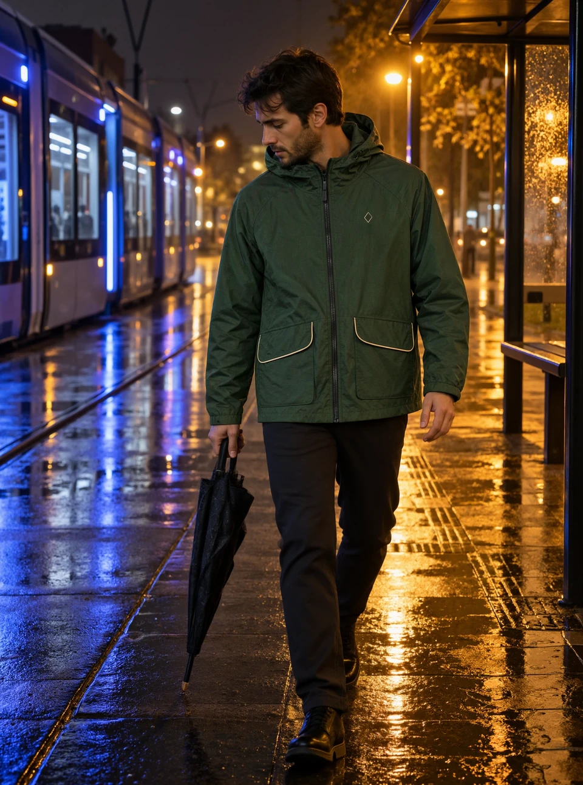
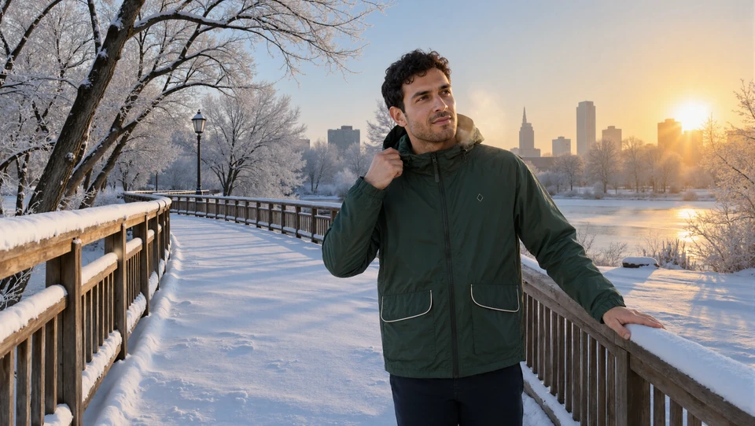
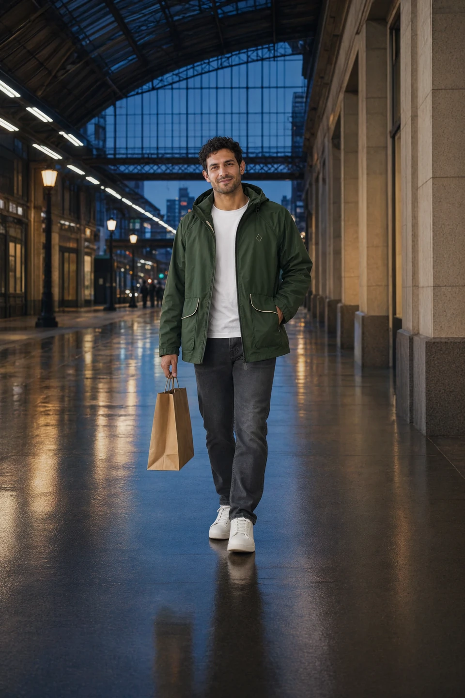
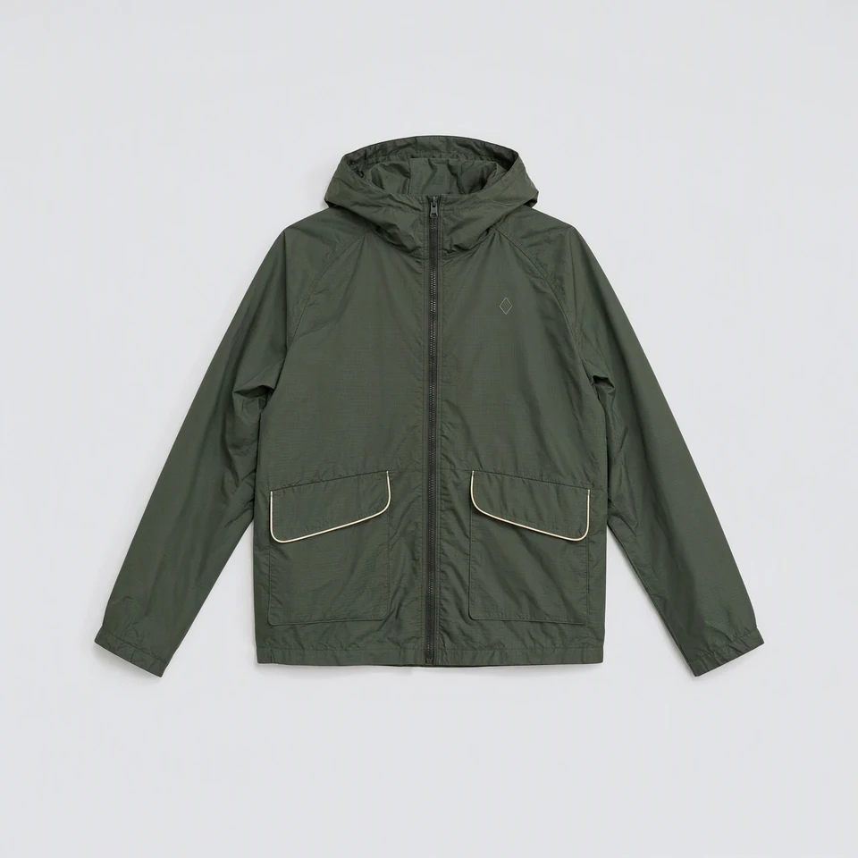

Fashion / on-model product images
Self-initiated portfolio workOne jacket, several editorial settings.
I created on-model fashion images for a jacket across a rainy city, a snowy landscape and an indoor travel setting, alongside a product flat lay. The series shows campaign and catalogue image directions for the same item.

Brief and output
The series presents one jacket in several editorial environments and a product-only composition from the same reference. It is a self-initiated portfolio work.




Review and recurring production
For a client project, we agree on the product reference, intended channel, visual direction and image count. I develop the on-model and product compositions, share them at the agreed review points and check product details against the source. After approval, I prepare the final files in the required formats. I work from brand briefs and art direction and support recurring production and larger image batches.
Discuss fashion image production ↗